3 PDI (Pentaho Data Integration)
En este capítulo trabajaremos sobre PDI también conocido como Kettle, la herramienta ETL de Pentaho BI Suite, conjunto de herramientas libres de Inteligencia de Negocio.
En PDI hay dos elementos: Transformations y Jobs.
Se definen Transformations para transformar los datos.
Se definen Jobs para organizar tareas estableciendo su orden y condiciones de ejecución. Transformations es un tipo de tarea.
Tanto Transformations como Jobs, cuando se definen, se almacenan como archivos.
Asociadas a PDI se utilizan generalmente las siguientes herramientas:
Spoon es la interfaz gráfica de PDI, permite diseñar y ejecutar Transformations y Jobs.
Pan es la herramienta que permite ejecutar Transformations desde la línea de comandos.
Kitchen es la herramienta que permite ejecutar Jobs desde la línea de comandos.
Usaremos PDI mediante Spoon. También usaremos el sistema de gestión de bases de datos relacional de código abierto PostgreSQL1.
Mediante PDI, a partir de los datos en formato CSV, generaremos las tablas de dimensiones y hechos en una BD PostgreSQL.
Objetivos del capítulo
Usar una herramienta ETL profesional.
Conocer los elementos y el funcionamiento de PDI, y usarlo para:
Transformar los datos.
Generar nuevas tablas.
Obtener un diseño en estrella.
Entender la estructura y la implementación de los cubos OLAP.
3.1 Datos y diseño del caso práctico
El caso práctico que se desarrolla se basa en los datos del Padrón Municipal. En el documento se usan los datos de la provincia de Granada pero cada estudiante tiene una provincia asignada para realizar las actividades propuestas usando sus propios datos (además de los datos comunes). La provincia asignada está disponible en el documento de PRADO Asignación de Provincia.
En este apartado se explica cómo obtener los datos necesarios. Se presenta el diseño multidimensional a nivel conceptual y lógico realizado a partir de estos datos.
3.1.1 Obtención de los datos
Vamos a trabajar con datos del Padrón Municipal para los municipios de la provincia asignada2. Para cada municipio, obtendremos los datos del número de mujeres y hombres contabilizados cada 1 de Enero, desde el año 1996 hasta el último año publicado.
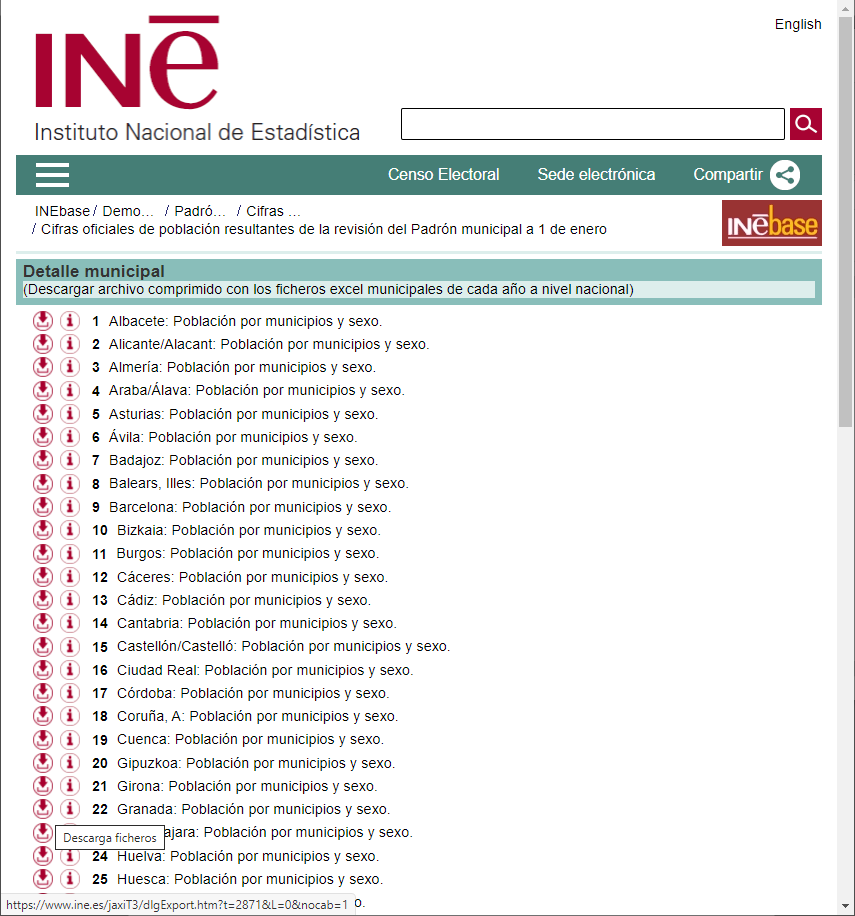
Figura 3.1: Descarga de datos del Padrón municipal (INE).
Los datos de las distintas provincias se puede obtener del INE (Instituto Nacional de Estadística), cuya página se muestra en la figura 3.1. Pulsando sobre el icono Descarga ficheros situado a la izquierda del nombre de la provincia que tenemos asignada, se abre la ventana de la figura 3.2, que nos permite seleccionar el formato de descarga de los datos.
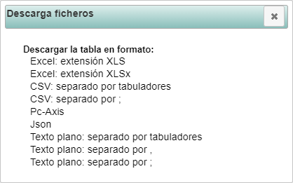
Figura 3.2: Selección del formato de la descarga.
Descargaremos los datos de la provincia asignada en formato:
- CSV: separado por ;
En mi caso, he descargado los datos de la provincia de Granada. Si abrimos el archivo que hemos descargado, tenemos una tabla con los municipios de la provincia (una combinación del código y el nombre del municipio) y, en el resto de columnas, tenemos la combinación de los valores del sexo (“Total”, “Mujeres” y “Hombres”) y el año. Además de los datos de los municipios, se presentan los datos agrupados para toda la provincia.
Vamos a completar esos datos con otros comunes preparados a partir de datos obtenidos del INE y del CNIG (Centro Nacional de Información Geográfica). Se pueden descargar de https://doi.org/10.6084/m9.figshare.13505136.
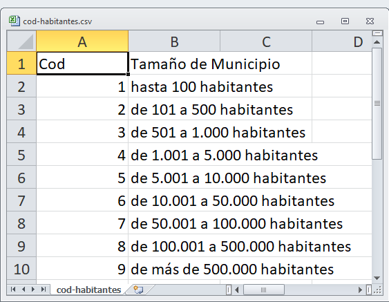
Figura 3.3: Contenido del archivo cod-habitantes.csv.
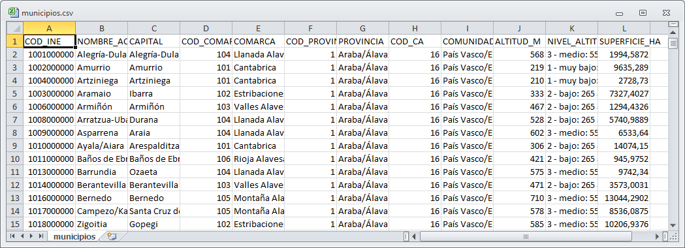
Figura 3.4: Contenido del archivo municipios.csv.
Estos archivos contienen códigos para definir intervalos en función del número de habitantes de los municipios (cod-habitantes.csv), que se muestra en la figura 3.3, y datos adicionales de los municipios (municipios.csv), en particular, para cada municipio, su capital, comarca agraria, provincia, comunidad autónoma, altitud y superficie (figura 3.4).
3.1.2 Diseño multidimensional
En este apartado vamos a realizar un diseño multidimensional a partir de los datos disponibles.
En primer lugar vamos a estudiar la granularidad (el nivel de detalle) de los datos disponibles. A continuación, definiremos la granularidad del sistema a desarrollar, y realizaremos los diseños conceptual y lógico del sistema multidimensional.
3.1.2.1 Granularidad de los datos
Para realizar el diseño multidimensional, es fundamental entender la granularidad de las fuentes de datos. La granularidad de nuestro diseño podrá ser, como máximo, tan fina como la de los datos disponibles.
Con esta finalidad,creo que resulta muy útil tener presente las definiciones de los conceptos de población, individuo y carácter que se formulan en Estadística Descriptiva. En concreto, incluyo aquí las realizadas por Abad y Vargas (1991):
Se entiende por población al conjunto objeto de estudio.
Cada uno de los elementos del conjunto es un individuo.
Los caracteres o características son las propiedades que deseamos observar sobre los elementos de la población y que han de tener todos y cada uno de ellos. En realidad, observar un carácter será efectuar una medición, en sentido amplio. Atendiendo a su naturaleza estos caracteres representarán o no una cantidad numérica.
Para el caso que estamos considerando:
Un individuo sería un municipio de la provincia que tenemos asignada en un periodo concreto.
La población sería el conjunto de municipios de la provincia asignada para cada uno de los periodos de los que hay datos disponibles.
Los caracteres observados en el archivo obtenido del INE son: el código y nombre de municipio, el periodo, cantidad de hombres y cantidad de mujeres, también tenemos el total de habitantes, derivado a partir de la cantidad de hombres y mujeres; tenemos datos cuya granularidad es provincia y periodo: son el resultado de la agregación de los datos de todos los municipios. En el archivo
municipios.csvtenemos más caracteres de los individuos, pero definidos solo a nivel de municipio, en principio se pueden considerar independientes del periodo, válidos para todos los periodos en los que tenemos observaciones. En el archivocod-habitantes.csvse define la forma de codificar el carácter relativo a la cantidad total de habitantes.
Así, el municipio y el periodo identifican a cada individuo (un municipio en un periodo). La cantidad de hombres y mujeres son medidas sobre cada uno de los individuos; también disponemos de caracteres adicionales de los municipios, independientes del periodo.
Si nos fijamos en los archivos que hemos obtenido del INE, aunque su granularidad se corresponde con el concepto de individuo considerado (también incluyen el agregado a nivel de provincia), en ninguno de ellos las filas están definidas a nivel de individuo3.
3.1.2.2 Diseño conceptual
Para realizar el diseño multidimensional en este caso vamos a considerar la granularidad más fina disponible: municipio y periodo (definen a cada individuo).
El foco de atención es el Padrón, son los hechos (responden a la pregunta Cuánto pero los nombramos por el nombre del foco te atención); el municipio responde a la pregunta Dónde y el periodo a la pregunta Cuándo, serán las dimensiones; Municipio y Periodo son los niveles más bajos de cada una de las dimensiones (figura 3.5).
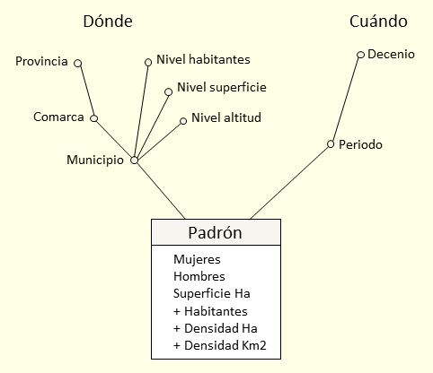
Figura 3.5: Diseño conceptual.
Para la dimensión Cuándo, vamos a agrupar los periodos en decenios, que podemos definir de forma inmediata a partir del año (Periodo), la jerarquía que incluye el nivel Decenio nos permitirá agrupar o seleccionar fácilmente los periodos.
En cuanto a la dimensión Dónde, podemos definir jerarquías utilizando los datos adicionales obtenidos de municipios.csv. Definimos una jerarquía geográfica que incluye los niveles Municipio, Comarca y Provincia; como solo hay datos de una provincia, los datos de la comunidad autónoma podemos definirlos como descriptores del nivel Provincia; asimismo, el código de municipio y su capital se pueden definir como descriptores del nivel Municipio. Se han considerado otras jerarquías compuestas por el nivel Municipio y las diversas clasificaciones que se realizan en función de su altitud (Nivel altitud), número de habitantes (Nivel habitantes), y otra que podemos definir en función de su superficie (Nivel superficie). Para las dimensiones, con el objetivo de simplificar la representación, se ha considerado el criterio de no representar explícitamente el nivel Todo para cada una de ellas.
Para los hechos, además de las medidas base disponibles en los archivos obtenidos del INE relativas a cantidad de mujeres (Mujeres) y cantidad de hombres (Hombres), consideramos la medida de la superficie del municipio en Ha (Superficie Ha) disponible en los datos obtenidos de municipios.csv, que suponemos no ha variado en los periodos considerados. Definimos medidas calculadas (o derivadas) a partir de estas como son:
- Cantidad total de habitantes (Habitantes):
- \(Habitantes = Mujeres + Hombres\)
- Densidad de población por Ha (Densidad Ha):
- \(Densidad\ Ha = \frac{Habitantes}{Superficie\ Ha}\)
- Densidad de población por Km2 (Densidad Km2):
- \(Densidad\ Km2 = 100 \times Densidad\ Ha\)
En lo que se refiere a la aditividad de las medidas, son aditivas por la dimensión Dónde y no-aditivas por la dimensión Cuándo4, por tanto, son semi-aditivas. Cuando realicemos consultas multidimensionales, deberemos prestar especial atención a la dimensión Cuándo para no cometer errores por este motivo.
3.1.2.3 Diseño lógico
A partir del diseño conceptual de la figura 3.5, el diseño lógico obtenido se muestra en la figura 3.6.
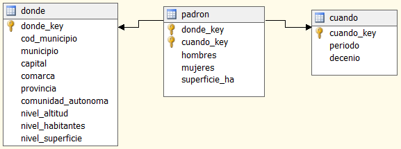
Figura 3.6: Diseño lógico, ROLAP en estrella.
Realizamos un diseño ROLAP en estrella: a cada dimensión le corresponde una tabla y otra tabla para los hechos. La llave primaria de cada dimensión es una llave generada, que se usa como llave externa en los hechos. El conjunto de llaves externas en los hechos forma su llave primaria. En los hechos, solo almacenamos las medidas base.
Estos diseños son los que implementaremos a partir de los datos que hemos obtenido. A la hora de realizarlos, en todo momento hemos tenido presente los datos disponibles y los que se pueden derivar directamente a partir de ellos que puedan resultar de interés para el supuesto decisor.
3.1.3 Objetivo
Nuestro objetivo es implementar el diseño de la figura 3.6 en PostgreSQL usando PDI para realizar las transformaciones.
3.2 Herramientas de soporte
Para trabajar con PDI y PostgreSQL en este contexto usaremos principalmente dos herramientas de soporte:
Spoon: la interfaz gráfica de PDI.
pgAdmin: aplicación libre para administrar BD en PostgreSQL.
Vamos a comenzar, por un lado, con pgAdmin creando la BD PostgreSQL de trabajo donde generaremos las tablas de hechos y dimensiones; por otro, presentando el funcionamiento de Spoon.
Para ampliar información sobre PDI una fuente adecuada son los libros de Roldán: (Roldán 2017) y (Roldán 2018); para PostgreSQL, es recomendable el libro de Obe (2017).
3.2.1 Crear una base de datos PostgreSQL
En primer lugar, vamos a crear una BD PostgreSQL mediante pgAdmin 4. Generalmente, al iniciarse pgAdmin 4 nos solicita el usuario y la contraseña.
Así, al iniciar pgAdmin 4 se abre la aplicación en el navegador predeterminado. En la zona Browser, en la parte izquierda, se pueden desplegar los servidores y elementos dentro de cada uno (figura 3.7).
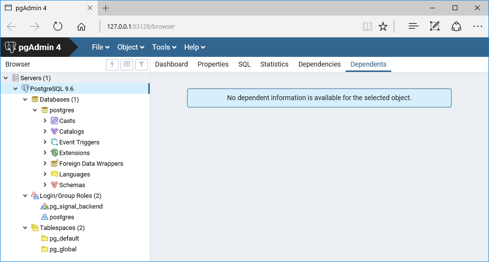
Figura 3.7: Pantalla de inicio de pgAdmin 4.
Para crear una nueva BD, en el menú contextual del grupo de objetos Databases5, seleccionamos la opción Create > Database (figura 3.8).
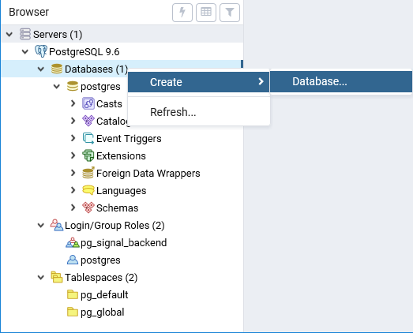
Figura 3.8: Nueva base de datos.
La ventana de definición de la BD se muestra en la figura 3.9. En ella, el único parámetro que tenemos que definir es el nombre de la BD (Database). En el campo Owner se muestra el usuario con el que estamos trabajando.
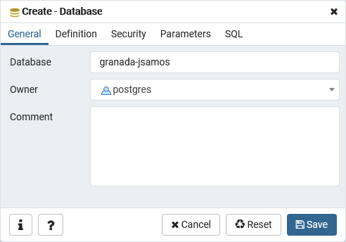
Figura 3.9: Nombre de la nueva base de datos.
En este caso el criterio que voy a seguir es:
- Asignar a la BD el nombre de la provincia de trabajo seguida del usuario de correo (p.e., en mi caso
granada-jsamos).
Para crearla, pulsamos sobre Save. Una vez creada, podemos verla como un objeto más en pgAdmin.
En PostgreSQL, dentro de una BD podemos tener varios esquemas (Schemas), que son los que contienen los objetos tabla (Tables). Si un usuario tiene acceso a una BD, puede acceder a todos sus esquemas. Por defecto, se trabaja en el esquema llamado public, es decir, si no se indica el esquema en una operación SQL sobre una tabla en una BD PostgreSQL, se considera que la tabla se encuentra en el esquema public.
En algún caso, es posible que necesitemos trabajar con un esquema determinado (por ejemplo, si importamos datos a una BD mediante LibreOffice). Podemos crear un esquema de forma similar a como se crea una BD: desde el menú contextual del grupo de objetos Schemas, seleccionamos la opción Create > Schema (figura 3.10).
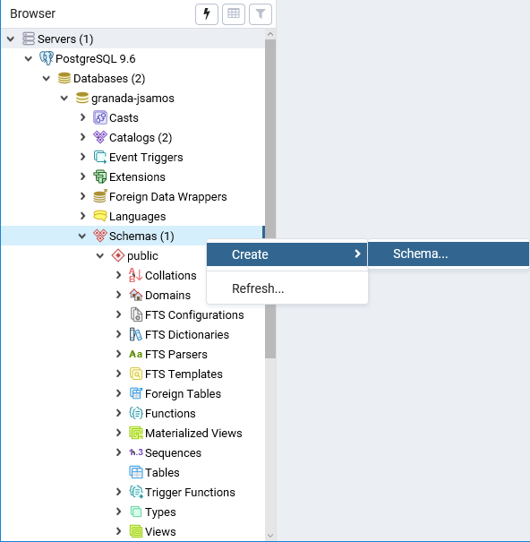
Figura 3.10: Nuevo esquema.
En esta actividad trabajaremos con el esquema por defecto y organizaremos los datos en varias BD. No es necesario crear ningún esquema en este momento.
3.2.2 Crear Transformations y Jobs en Spoon
Trabajaremos con PDI mediante la interfaz gráfica de Spoon. En la figura 3.11 se muestra su pantalla de inicio. Esta pantalla aparece después de una pantalla de presentación de la herramienta que se muestra mientras arranca (según la versión, puede tardar bastante tiempo en arrancar, dependiendo de la velocidad de nuestro ordenador puede tardar varios minutos). La community-edition que recomiendo instalar tiene todas las funciones que necesitamos para el desarrollo de las actividades propuestas y es mucho más rápida que la versión comercial.
Para consultar libros o webs de ayuda es recomendable trabajar con la versión en Inglés. Si queremos trabajar en Español, la versión de España con la que he trabajado tenía problemas con las tildes, sin embargo, la versión de Argentina no presentaba esos problemas (el idioma se cambia en Tools > Opciones). Aquí lo comento para la versión en Inglés.
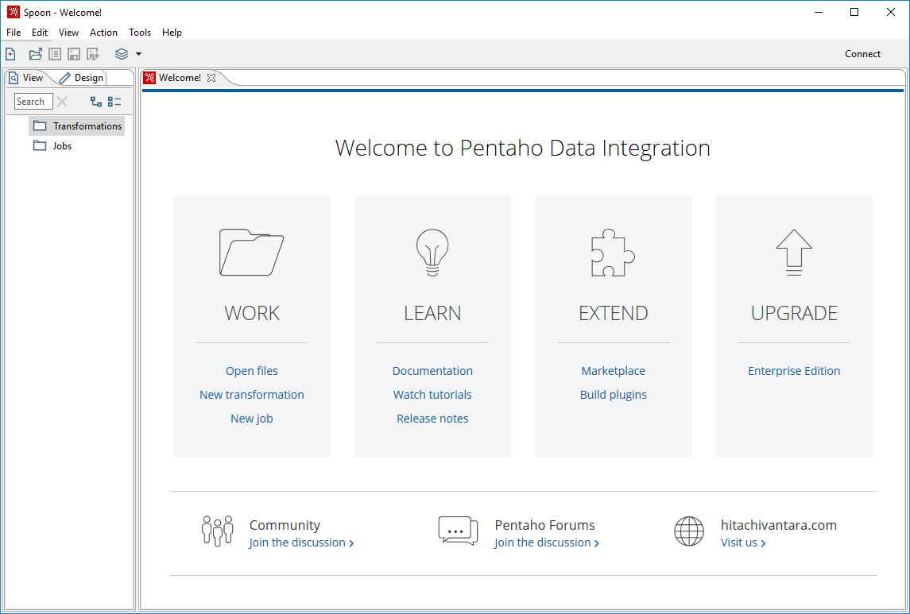
Figura 3.11: Pantalla de inicio de Spoon.
En la zona de la izquierda, en la hoja View, tenemos un apartado Transformations y otro Jobs. El contenido de la hoja Design se configura en función del tipo de elemento que estemos definiendo (al comenzar se encuentra vacío).
Podemos crear un objeto de uno de los tipos desde el menú contextual correspondiente, pulsando sobre la opción New. En la figura 3.12, se muestra para el tipo Transformation.
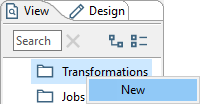
Figura 3.12: Crear Transformations en Spoon.
Una vez creado el objeto, automáticamente se abre el área de diseño y se selecciona la hoja Design de la ventana de la izquierda, con el contenido que se puede utilizar para definir el tipo de objeto, en este caso Transformation.
Si pulsamos sobre la hoja View (figura 3.13), se muestran los elementos del tipo de objeto que estamos definiendo, en este caso Transformation. Sin embargo, no aparece el apartado Jobs como estaba inicialmente.
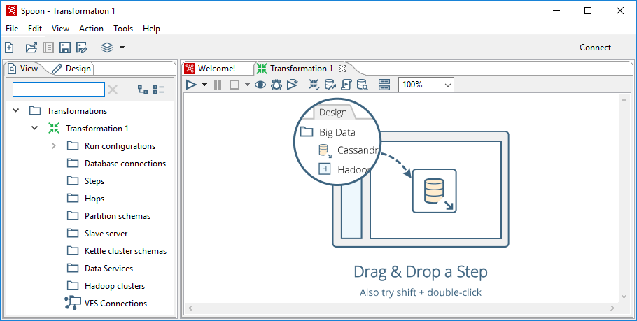
Figura 3.13: Elementos del tipo de objeto Transformation.
Si queremos crear un objeto de tipo Job, tenemos que hacerlo desde el menú de la herramienta, seleccionado la opción File > New > Job, o File > New > Transformation si inicialmente hubiéramos creado un objeto de tipo Job (figura 3.14).
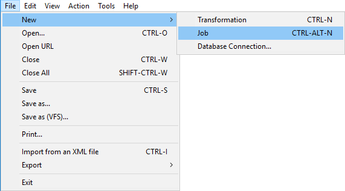
Figura 3.14: Crear Jobs desde el menú.
Dentro de ese mismo menú (figura 3.14) también se encuentra el apartado Database Connection, para definir los elementos necesarios para acceder a las BD. Sin embargo, los objetos de este tipo no se crean de forma independiente (como ocurre con Transformations y Jobs), sino que están contenidos en el objeto que se esté diseñando en ese momento.
En la figura 3.15, se muestra el área de diseño para el tipo de objeto Job. En particular, se puede apreciar que uno de los elementos que se pueden utilizar en la hoja Design es el tipo Transformation, otro es de tipo Job (un objeto Job puede contener otros objetos del mismo tipo).
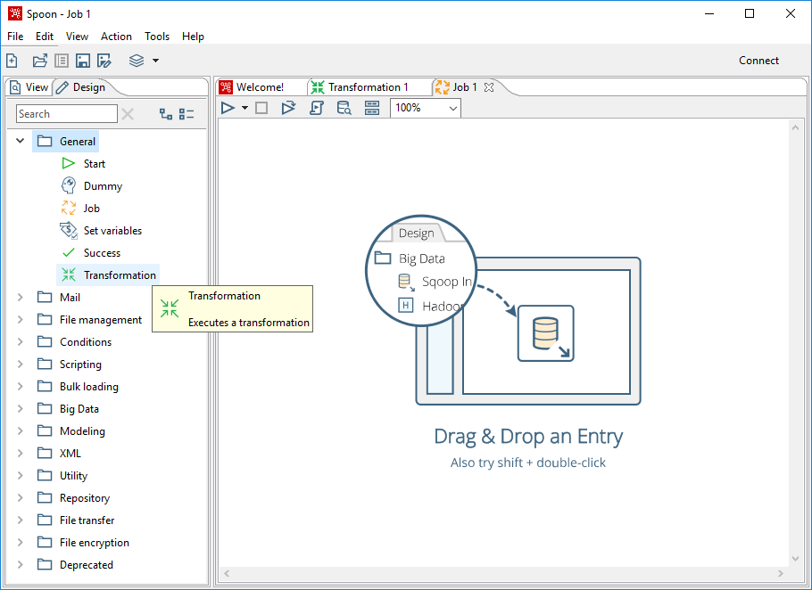
Figura 3.15: Área de diseño para el tipo de objeto Job.
Si pulsamos sobre la hoja View (figura 3.16), se muestran los elementos del tipo de objeto que estamos definiendo, en este caso Job (tampoco aparece el apartado Transformations).
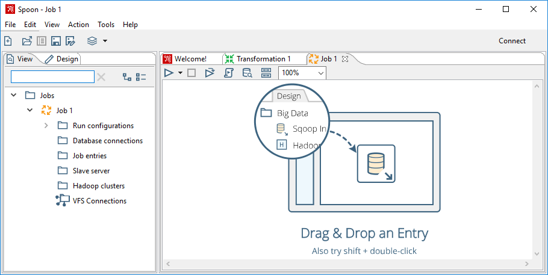
Figura 3.16: Elementos del tipo de objeto Job.
Tanto Transformations como Jobs se almacenan como archivos. Pulsando sobre el icono Save current file de la barra de herramientas, podemos guardar el archivo correspondiente en nuestra carpeta de trabajo. Se almacenan con extensión ktr (Kettle transformations) y kjb (Kettle jobs) los objetos de tipo Transformation y Job, respectivamente. Internamente son archivos XML que son interpretados por el motor de PDI.
En este caso el criterio que voy a seguir es:
Guardar el objeto de tipo Job con el prefijo “generar_ft_” y el nombre y el nombre de la provincia de trabajo (p.e., en mi caso
generar_ft_granada.kjb).Asignar al primer objeto de tipo Transformation el nombre
tabla_plana.ktr.
3.3 Desarrollo de un trabajo (Job)
Vamos a comenzar a desarrollar un trabajo (job) que tiene como objetivo generar una tabla plana a partir de todos los datos disponibles en formato CSV (p.e., en mi caso el trabajo generar_ft_granada.kjb). Este trabajo contendrá la transformación (transformation) tabla_plana.ktr.
3.3.1 Elementos en un trabajo
Cada elemento de un trabajo se llama entrada (job entry), se conectan entre sí mediante flechas de distinto tipo de flechas llamadas saltos (hops) que expresan precedencia: definen el orden de ejecución de las entradas. Desde cada entrada pueden salir varios saltos, asimismo a una entrada pueden llegar varios saltos.
Para añadir una entrada a un trabajo, buscamos el tipo de entrada en la columna Design y lo pulsamos-arrastramos-soltamos hasta el área de diseño de trabajo.
Cada trabajo ha de tener una entrada de tipo Star que es la primera que se ejecuta. En nuestro caso, también necesitaremos una entrada de tipo Transformation que contendrá la transformación que vamos a definir. Para definir el salto entre las dos entradas, pulsamos sobre la entrada de tipo Star, se abre una mini-barra de iconos con operaciones (figura 3.17), pulsando-arrastrando-soltando el icono del conector de salida (output connector) sobre la entrada siguiente (en este caso Transformation) se define un salto entre las dos entradas, representado mediante una flecha.
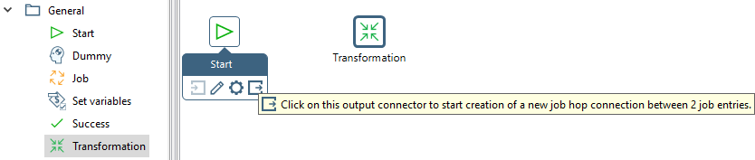
Figura 3.17: Añadir entradas y definir un salto en un trabajo.
Pulsando sobre la flecha que representa el salto, la condición de la dependencia va cambiando: desactiva, activa en caso de éxito, en caso de error, o en cualquier caso (depende de las entradas conectadas). Por ejemplo, en el caso de una salto partiendo de Star solo se puede activar en cualquier caso o desactivar.
Si pulsamos doble-clic sobre la entrada Transformation podemos definir sus propiedades (figura 3.18)
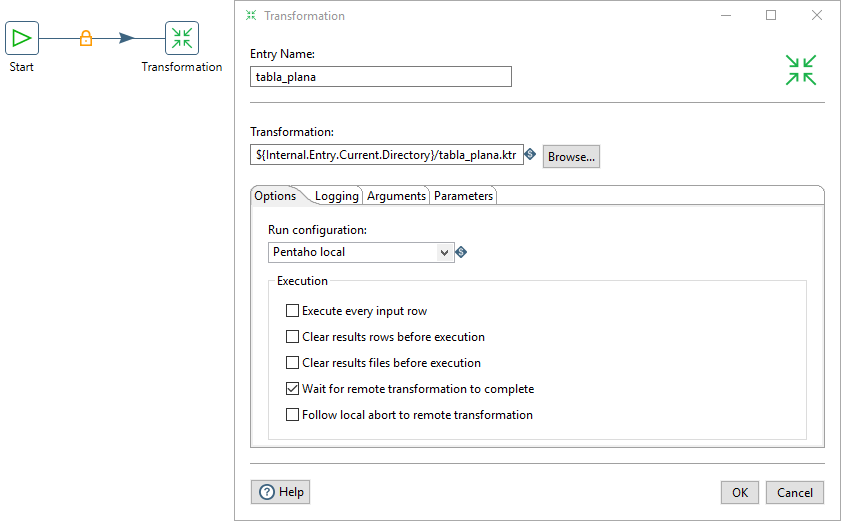
Figura 3.18: Definición de propiedades de una entrada Transformation.
En concreto, debemos seleccionar el archivo que contiene la transformación (tabla_plana.ktr), pulsando sobre el botón Browse, y definir el nombre en el campo Entry Name. En el resto de campos, dejamos las opciones por defecto.
- El criterio que voy a seguir para las entradas Transformation es definir el mismo nombre que el archivo de la transformación asociada (sin la extensión).
3.3.2 Ejecución de un trabajo
Una vez definidos todas las propiedades necesarias de las entradas y los saltos entre las entradas, podemos ejecutar el trabajo. Todavía no hará nada, porque no hemos definido el contenido de la transformación, pero nos permitirá conocer el entorno de diseño en el que trabajamos.
Para ejecutar el trabajo, pulsamos sobre Run, en la barra de herramientas del área de diseño (figura 3.19).
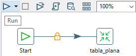
Figura 3.19: Ejecución de un trabajo.
Se abre la ventana de opciones, donde se pueden configurar las propiedades del entorno de ejecución (figura 3.20). En este caso, las opciones por defecto son adecuadas, pulsamos sobre el botón Run.
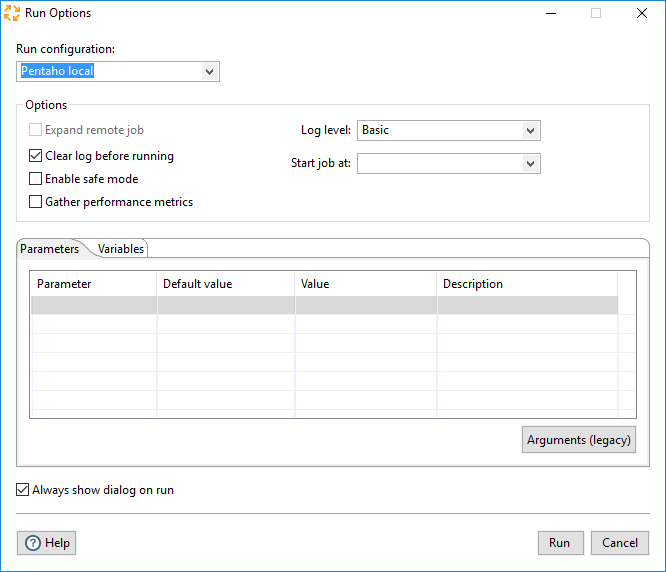
Figura 3.20: Ejecución de un trabajo.
En caso de tratar de ejecutar un trabajo en el que no hemos salvado últimos cambios realizados, nos avisará mediante una ventana y dará opción a guardarlos.
El resultado de la ejecución se muestra en la figura 3.21. Se representa gráficamente en cada entrada y se muestra el detalle de la ejecución en la ventana inferior del área de diseño.
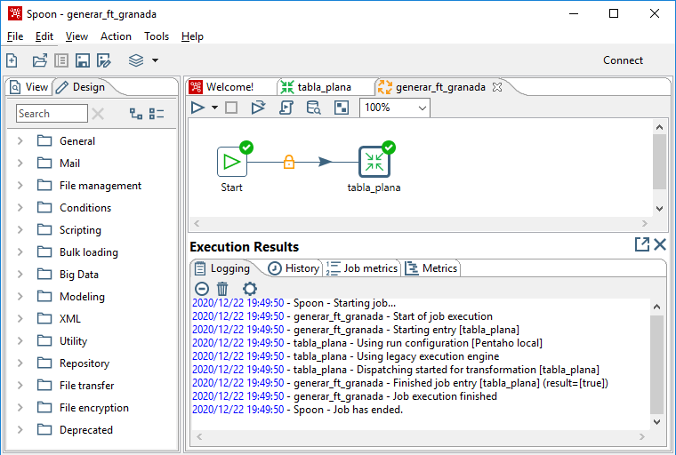
Figura 3.21: Resultado de la ejecución de un trabajo.
En la ventana Execution Results, además de la hoja que se muestra en la figura 3.21, hay otras hojas con más detalles del resultado de la ejecución. En este caso, por ejemplo, el contenido de la hoja Job metrics se muestra en la figura 3.22.
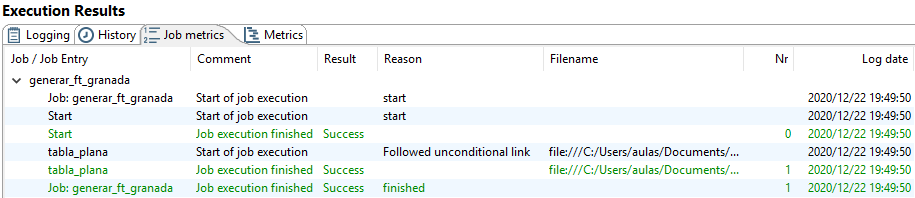
Figura 3.22: Job metrics de la ejecución de un trabajo.
En concreto, en este caso, muestra el detalle de la ejecución, como el tipo de salto que se ha seguido entre las entradas o el archivo asociado a cada entrada que se ha ejecutado.
3.3.3 Conexión compartida a la BD
Para acceder a una BD desde un trabajo o una transformación, tenemos de definir una conexión. Se podría esperar a definirla hasta que en alguna operación necesitemos acceder a la BD pero, como es evidente que la vamos a necesitar, la definiremos ya. Las conexiones a las BD se pueden definir localmente a cada trabajo o transformación pero, una vez definidas, se pueden compartir con el resto de trabajos o transformaciones.
Nuestro objetivo es crear en la BD de trabajo diversas tablas con el resultado de las operaciones que realizamos mediante los trabajos y transformaciones, a partir de los datos iniciales. Vamos a definir una conexión con esta BD y la vamos a compartir de manera que el resto de trabajos o transformaciones que definamos la puedan usar, sin necesidad de tener que definirla de nuevo cada vez.
En la hoja View del trabajo, podemos ver sus componentes. Uno de ellos es Database connections. En su menú contextual (figura 3.23), seleccionamos la opción New.
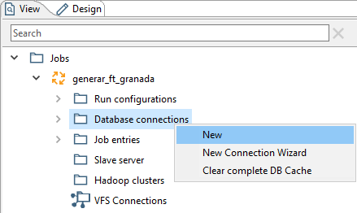
Figura 3.23: Nueva conexión a la BD.
En la ventana de definición de propiedades (figura 3.24), en el apartado Connection type, seleccionamos la opción PostgreSQL y automáticamente se configura la zona Settings con los campos a completar (en Port Number, el valor que indica es el correcto).
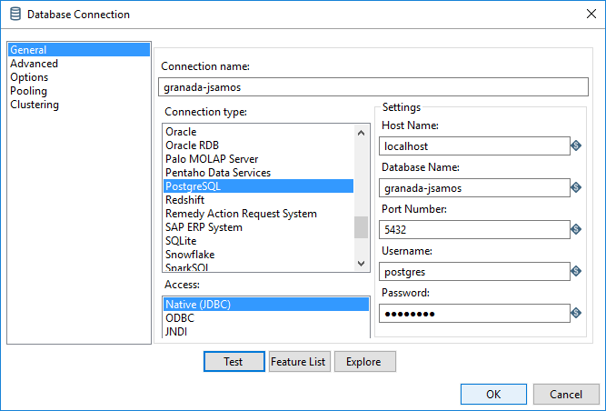
Figura 3.24: Definición de una conexión a la BD.
Los rellenamos con los valores siguientes:
Host Name:
localhost(en el entorno de prácticas, está en la misma máquina en la que trabajamos).Database Name: el nombre de nuestra BD de trabajo (p.e., en mi caso
granada-jsamos).Username: el usuario con el que accedemos a la BD.
Password: la contraseña del usuario que usemos.
También tenemos que asignarle un nombre a la conexión, en el campo Connection name:
- El criterio que voy a seguir es asignarle el mismo nombre de la BD (p.e., en mi caso
granada-jsamos).
A continuación, pulsamos sobre Test para comprobar que se establece la conexión correctamente. Si todo va bien, pulsamos sobre OK.
Con esta operación la conexión está creada pero es particular del trabajo donde se ha realizado la definición. Para compartirla con el resto de trabajos y transformaciones que definamos, desde el menú contextual de la conexión creada, seleccionamos la opción Share (figura 3.25).
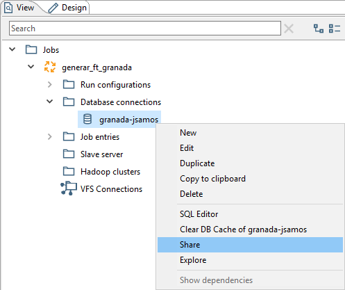
Figura 3.25: Compartir una conexión a la BD.
Para mostrar que es compartida, cambia el formato del nombre de la conexión y pasa a ser letra bold.
3.4 Desarrollo de transformaciones
En esta sección vamos a desarrollar las transformaciones (Transformations) sobre los datos. Con lo presentado en la sección 3.3, sabemos cómo relacionar las transformaciones que definamos dentro de los trabajos. Así, en esta sección, además de definir las transformaciones, definiremos o modificaremos trabajos que las relacionen.
3.4.1 Obtener la tabla plana
A continuación, vamos a desarrollar la transformación tabla_plana.ktr para obtener una tabla plana en la BD con todos los datos disponibles. El objetivo de esta transformación es, a partir de los datos de la provincia y los datos adicionales, disponibles en forma de archivos CSV, obtener una tabla en la BD con todos los datos, de manera que cada fila se corresponda a un individuo observado: en este caso, un municipio en un año.
Pulsando sobre la hoja con su nombre, abrimos el área de diseño de la transformación tabla_plana.ktr. En la hoja Design de la ventana de la izquierda, tenemos las categorías disponibles de pasos (Steps) que podemos aplicar en la transformación.
Acceder a los datos en formato CSV
Para acceder a los datos de las fuentes, en la hoja Design, desplegamos la sección Input y aparecen los tipos de pasos para la entrada de datos que soporta PDI. Pulsamos-arrastramos-soltamos el tipo CSV-file-input sobre el área de diseño de la herramienta (figura 3.26), para incluirla como parte de la transformación que estamos definiendo.
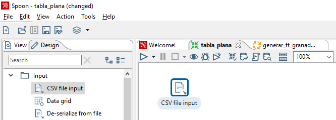
Figura 3.26: Incluir CSV-file-input en la transformación.
Para definir la operación, pulsamos doble-clic sobre ella y aparece la ventana de configuración (figura 3.27).
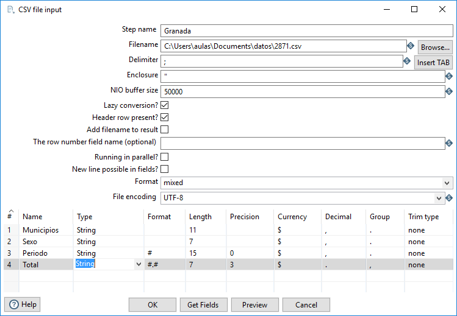
Figura 3.27: Configuración de CSV-file-input.
En primer lugar, definimos el nombre del paso en el campo Step name:
- El criterio que he seguido es darle el nombre de la provincia a la que corresponden los datos de entrada (p.e., en mi caso
Granada).
En el campo Filename, pulsando sobre el botón Browse, seleccionamos el archivo correspondiente a los datos de nuestra provincia.
El resto de campos los tenemos que definir de manera que comprobemos que los datos se leen correctamente. En general, la manera de comprobarlo es pulsando sobre el botón Get Fields que hace que la tabla de la ventana de configuración se rellene con el nombre y tipo de los campos que interpreta. Una vez tenemos los campos definidos, podemos pulsar sobre el botón Preview y abre una tabla con un ejemplo de los datos que obtiene con esa estructura de campos.
En el caso de los archivos con los que trabajamos, el separador es “;” en lugar de “,” como suele ser habitual en archivos CSV. Por otro lado, los archivos descargados del INE tienen codificación UTF-8 (a los archivos que he generado en Windows, les he dejado la codificación por defecto del sistema).
Por tanto, en el campo Delimiter indicamos el valor ; y en el campo File encondig seleccionamos el valor UTF-8. A continuación, pulsamos sobre Get Fields. Obtiene los campos y trata de asignarle a cada uno el tipo de datos y formato más adecuado en función de las instancias disponibles. Si pulsamos sobre Preview, podemos ver los datos que obtiene según esa definición de los campos. Se puede comprobar que los datos del Campo Total, por tener separador de miles, no los interpreta bien. Por otro lado, el campo Periodo, aunque es numérico, nos interesa tratarlo como String porque no es una medición sino que formará parte de una dimensión.
Cambiamos los tipos de los campos, en particular para el campo Periodo, para definirlo como String (el formato no es necesario cambiarlo). En el caso del campo Total se puede tratar de cambiar el formato para que interprete “.” como separador de miles y “,” como separador de decimales e ir comprobando el resultado pulsando sobre Preview. Después de varias pruebas sin éxito, he optado por definirlo también como String y hacer las modificaciones después, explícitamente6. La configuración de tipos que he usado se muestra también en la figura 3.27.
Al pulsar sobre Preview, el resultado que obtenemos se muestra en la figura 3.28.
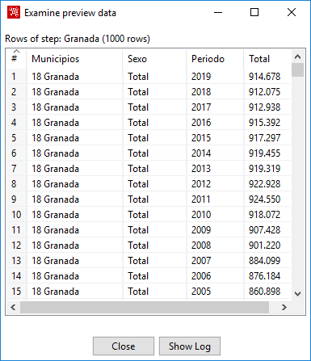
Figura 3.28: Vista del resultado de CSV-file-input.
En caso de error, si hacemos cambios en la definición, al pulsar sobre Get Fields puede aparecer la ventana de la figura 3.29, si seleccionamos la opción Clear and add all fields, borra las definiciones anteriores y genera los campos de nuevo.
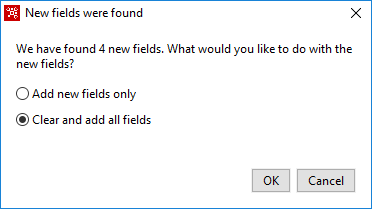
Figura 3.29: Reinterpretación de los datos en CSV-file-input.
Una vez comprobado que la interpretación de los datos se hace correctamente, podemos cerrar la ventana de definición, pulsando sobre OK. El resultado es que tenemos el nuevo paso en el área de diseño de la transformación. Si pulsamos sobre él, observamos que tiene una barra de operaciones similar a la de las entradas en el diseño de trabajos (figura 3.30), en particular incluye la operación para realizar la conexión con otros elementos, en este caso, con otros pasos, mediante un salto.
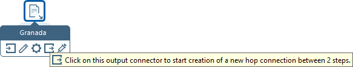
Figura 3.30: Barra de operaciones del paso.
Seleccionar datos no-agregados
Los datos con los que trabajamos incluyen datos de los individuos (a nivel municipio y año) y también datos agregados: datos para la provincia (en el campo Municipios, en lugar de un código de cinco dígitos y el nombre del municipio, aparece un código de dos dígitos y el nombre de la provincia, p.e., en mi caso “18 Granada”); en el campo Sexo, en lugar de “Mujeres” y “Hombres”, también aparece la suma de ambos bajo el concepto “Total”.
Vamos a comenzar la transformación de los datos, seleccionando exclusivamente los datos que no sean agregados. Para ello necesitamos añadir un paso Filter rows, que se encuentra en el apartado Flow (figura 3.31).
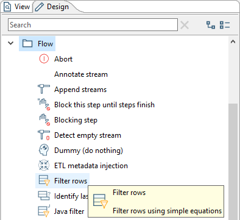
Figura 3.31: Ubicación del tipo de paso Filter rows.
Como ayuda para localizar los posibles pasos que necesitemos, podemos usar el campo Search de la hoja Design. Si introducimos en él alguna palabra clave de la operación que necesitamos hacer, nos muestra los tipos de paso en los que aparece en su nombre el contenido introducido (figura 3.32).
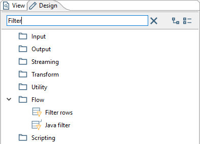
Figura 3.32: Búsqueda de tipos de paso.
Añadimos un paso de tipo Filter rows al área de diseño y lo conectamos con la salida del paso donde leíamos los datos mediante un salto. En el momento de establecer la conexión, podemos seleccionar si al nuevo paso le llega el resultado o los datos en caso de error (figura 3.33). En este caso, queremos tratar los datos leídos.
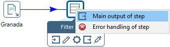
Figura 3.33: Conexión de los pasos.
Pulsando doble-clic sobre el nuevo paso, definimos sus propiedades. En el campo Step name le he asignado el valor Seleccionar no-agregados. El resto de propiedades se definirán cuando conectemos este paso con otro. Lo único que tenemos que definir es la condición de filtro de datos.
Pulsando sobre el primer campo podemos activar o no la negación de la condición, el valor “NOT”. Pulsando sobre el campo inferior, podemos seleccionar la columna sobre la que vamos a definir la condición, en este caso, seleccionamos el valor “Municipios (String)” (figura 3.34).
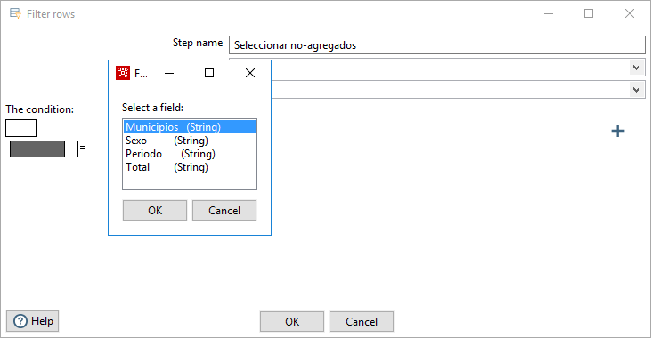
Figura 3.34: Definición de un paso Filter rows: selección de campos.
De igual forma podemos elegir la condición, como no hay una condición para indicar que los valores sean distintos, dejamos el valor “=” y activamos la negación de la condición. A continuación, debemos elegir un campo o un valor con el que comparar, en este caso es un valor. Pulsando sobre el apartado correspondiente, se abre la ventana en la que podemos introducir el valor que identifica al agregado, en este caso “18 Granada” (figura 3.35).
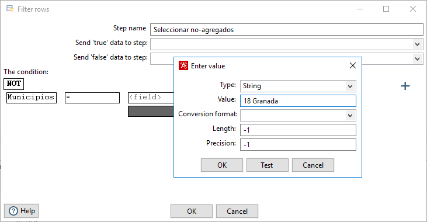
Figura 3.35: Definición de un paso Filter rows: valor a filtrar.
Para añadir una nueva condición, pulsamos sobre el icono Add condition (figura 3.36).
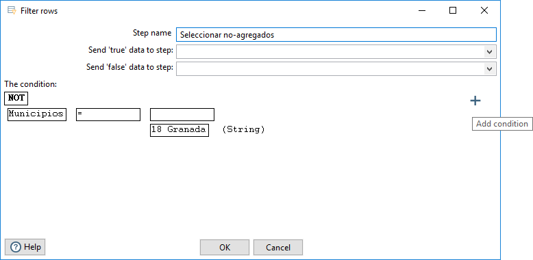
Figura 3.36: Definición de un paso Filter rows: añadir condición.
El resultado es que se añade una condición vacía (figura 3.37).
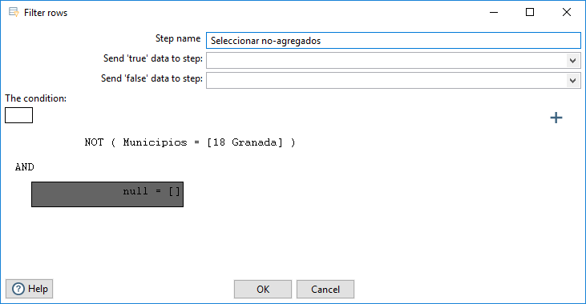
Figura 3.37: Definición de un paso Filter rows: condición vacía.
Al pulsar sobre la nueva condición, se reproduce la estructura vacía de una condición similar a la que acabamos de definir. Rellenándola seleccionando la columna “Sexo (String)” y el valor “Total”, y pulsando sobre el botón OK obtenemos el resultado de la figura 3.38.
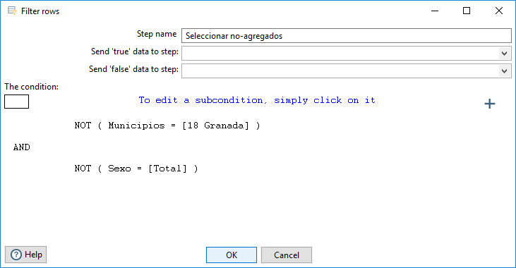
Figura 3.38: Definición de un paso Filter rows: segunda condición.
Pulsando de nuevo sobre el botón OK acabamos la definición y podemos probar la transformación. La ejecutamos pulsando sobre el botón Run en la barra de herramientas (figura 3.39).
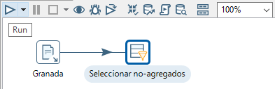
Figura 3.39: Ejecutar la transformación.
Funciona exactamente igual que para los trabajos, como se ha descrito en la sección 3.3.2. Aceptando la configuración por defecto para la ejecución y guardando la transformación (si no la habíamos guardado previamente) obtenemos el resultado de la ejecución. Además de los apartados comentados en la sección 3.3.2, en este caso es interesante el resultado que se muestra en la hoja de la hoja Step Metrics (figura 3.40).
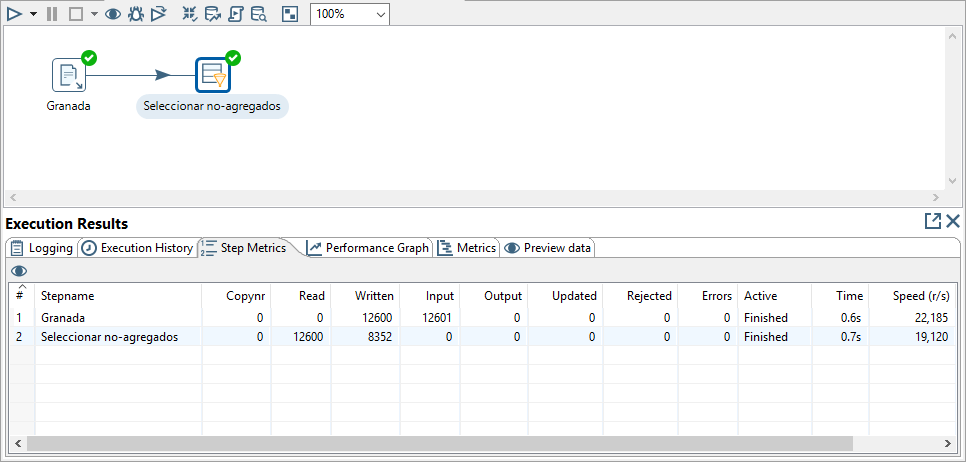
Figura 3.40: Resultado de la ejecución de una transformación.
En particular, para cada paso se muestra el número de filas leídas y escritas. De esta forma podemos saber las filas que ha filtrado el paso que acabamos de definir.
Podemos ver los datos del resultado en la hoja de la hoja Preview data (figura 3.41).
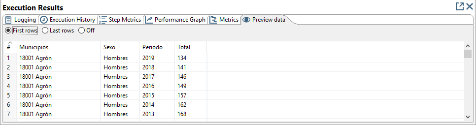
Figura 3.41: Resultado de la ejecución de una transformación: Preview data.
En caso de que nos interese ver solo los datos del resultado del paso que estamos diseñando, podemos explorar el resultado de un paso concreto, seleccionándolo y pulsando sobre la operación Preview this transformation en la barra de herramientas (figura 3.42).
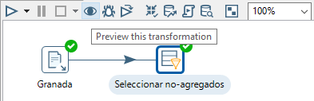
Figura 3.42: Ver el resultado de un paso.
En la ventana de configuración que se abre (figura 3.43), podemos definir condiciones para parar la ejecución. En este caso, no es necesario definir ninguna condición y podemos pulsar directamente sobre el botón Quick Launch.
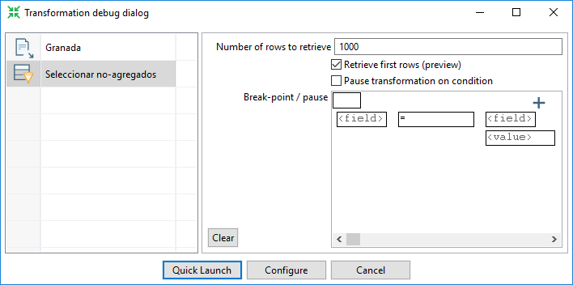
Figura 3.43: Configuración para ver el resultado de un paso.
En una nueva ventana se muestra el resultado obtenido (figura 3.44). La transformación mientras tanto está en ejecución. Si pulsamos sobre el botón Close solo se cierra la ventana de resultados; si pulsamos sobre Stop, además de cerrarse la ventana se para la ejecución.
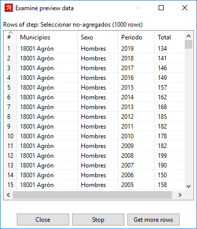
Figura 3.44: Resultado de un paso.
Si cerramos la ventana de resultados sin parar la ejecución, podemos pararla pulsando el botón Stop the running transformation en la barra de herramientas.
Transformar y filtrar Total
El campo Total representa la cantidad de habitantes observados bajo las condiciones definidas por la combinación de los otros campos. Como observamos en el paso de lectura de datos, es de tipo String e incluye el carácter “.” como separador de miles; por otro lado hay valores NULL (por no existir datos para ese año y municipio: ocurre para 1997 en todos los municipios y también para municipios nuevos u otros que han desaparecido, que no tienen datos para todos los años disponibles).
Vamos a eliminar el separador de miles y también vamos a filtrar los datos para trabajar exclusivamente con los datos de los que tenemos observaciones (valores distintos de NULL).
Para eliminar el separador de miles, vamos a buscar tipos de transformación que tengan que ver con strings (introducimos string en el campo de búsqueda en la hoja Design). Mirando la funcionalidad de los resultados que aparecen, el tipo de paso String operations puede servir. Lo añadimos y lo conectamos con la salida correcta del último paso. En la ventana de configuración, le he dado un nombre significativo, Eliminar separador miles, y, para la columna Total definimos que solo contenga dígitos. Para ello seleccionamos el valor “Total” en el apartado In stream field y el valor “only” en el apartado Digits (figura 3.45).
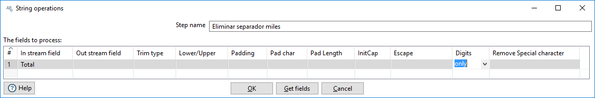
Figura 3.45: Transformación de un string.
Para seleccionar los datos con valores distintos de NULL en la columna Total, añadiremos un nuevo paso de tipo Filter rows, le he llamado Seleccionar no-NULL. Para definirlo, seleccionamos la columna y no definimos ningún valor en la condición, solo hemos de seleccionar el tipo de dato, por defecto, considera NULL (figura 3.46).
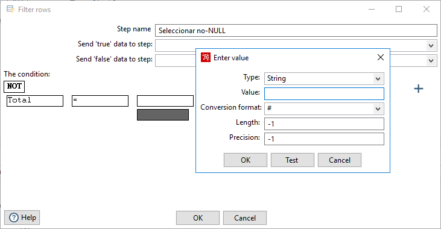
Figura 3.46: Selección de valores distintos de NULL.
Cuando definamos un paso, es conveniente comprobar el resultado de una u otra forma para asegurarnos, en la medida de lo posible, que las transformaciones son correctas.
Agrupar los datos a nivel individuo
Consideramos que un individuo es un municipio en un año concreto. Observamos características de cada uno de los individuos, en este caso la cantidad de mujeres y de hombres. Actualmente tenemos cada carácter observado en una fila. Vamos a estructurar los datos de manera que cada fila se corresponda con un individuo (municipio y año).
El tipo de paso que nos permite hacer esa transformación es Row denormaliser, en el apartado Transform. Si miramos la explicación de la operación, al posicionar el ratón sobre el tipo de transformación, podemos comprobar que, para que funcione, los datos han de estar ordenados por los campos por los que se agrupen los datos: los que definen al individuo (figura 3.47).
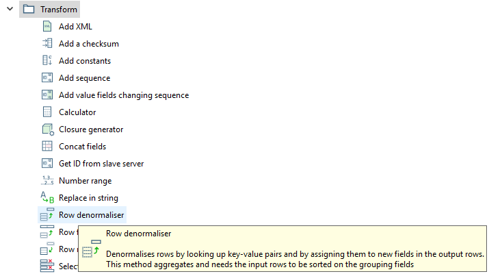
Figura 3.47: Requisitos de la transformación Row denormaliser.
Por tanto, antes vamos a ordenar los datos por los campos Municipios y Periodo. Si introducimos “sort” en el campo de búsqueda, localizamos el tipo de paso Sort rows en el apartado Transform. Lo añadimos, lo conectamos a la salida del paso anterior y abrimos su ventana de configuración (figura 3.48).
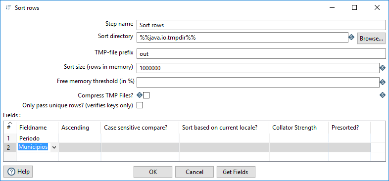
Figura 3.48: Ordenar filas.
No he cambiado el nombre del paso7. Lo único que necesitamos configurar son los campos a considerar en la ordenación: los seleccionamos en el apartado Fieldname (Periodo y Municipios).
Una vez tenemos los datos ordenados, podemos aplicar el paso de tipo Row denormaliser. También lo añadimos, lo conectamos a la salida del paso de ordenación y abrimos su ventana de configuración (figura 3.49).
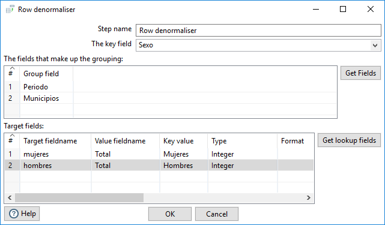
Figura 3.49: Configuración de Row denormaliser.
La columna a introducir en The key field es
Sexo, es el campo a partir de cuyos valores se generarán columnas.The fields that make up the grouping son los campos que definen al individuo, en el mismo orden en que se ha indicado que se realice la ordenación en el paso anterior:
PeriodoyMunicipios.En el apartado Target fields hay que indicar los nombres de los campos que se generarán (Target fieldname), pueden ser los valores que queramos, en función de los valores del campo clave (Key value) y el campo de dónde se tomarán los valores (Value fieldname). Se puede indicar el tipo de esos campos por lo que podemos aprovechar para hacer el cambio de tipo si indicamos que son de tipo Integer.
Pulsando sobre OK, nos avisa mediante una ventana de que los datos han de estar ordenados por los campos que hemos definido como grouping fields, en caso contrario no funcionará bien.
El resultado de la operación se muestra en la figura 3.50.
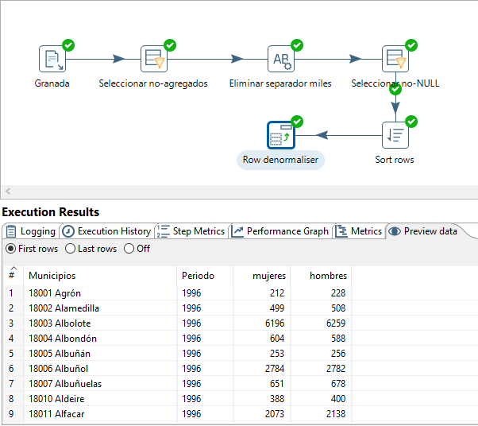
Figura 3.50: Resultado de Row denormaliser.
Si miramos la hoja Step metrics de Execution Results, se puede observar que tenemos la mitad de registros en la salida que en la entrada, como era de esperar.
Obtener llaves externas
Vamos a enriquecer los datos de nuestra provincia con los datos adicionales disponibles en los archivos cod-habitantes.csv y municipios.csv. Para definir las relaciones entre ellos, necesitamos obtener campos que se correspondan con las llaves primarias de esos archivos.
Para definir la relación con
cod-habitantes.csvnecesitamos un código definido en función del número de habitantes del municipio.Para la relación con
municipios.csvnecesitamos el código numérico de cinco dígitos que precede al nombre del municipio. En el archivo, este código tiene varios ceros a la derecha que podemos eliminar.
En primer lugar, añadimos un paso de tipo Calculator, del apartado Transform, para calcular una columna habitantes como la suma de la cantidad de mujeres y de hombres (a partir de ella posteriormente definiremos el código). En la figura 3.51, en la ventana de configuración, definimos el nombre del paso, el nombre del nuevo campo, habitantes, de entre las posibles expresiones que aparecen en el apartado Calculation, seleccionamos la suma, elegimos los campos a partir de los que se obtiene y definimos el tipo del resultado, en este caso Integer.
Figura 3.51: Calcular el número de habitantes.
A continuación, vamos a definir una columna cod_habitantes en función del valor del campo habitantes, según los intervalos definidos en el archivo cod-habitantes.csv. La mejor forma que he encontrado de definirla es usando un paso de tipo User defined Java expression, del apartado Scripting, de forma anidada para contemplar todos los extremos de los intervalos. La expresión de definición del campo es la siguiente:
habitantes > 500000 ? "9" : habitantes > 100000 ? "8" : habitantes > 50000 ? "7" : habitantes > 10000 ? "6" : habitantes > 5000 ? "5" : habitantes > 1000 ? "4" : habitantes > 500 ? "3" : habitantes > 100 ? "2" : "1"
La definición se muestra en la figura 3.52, donde, además del nombre del paso, incluimos el nombre del campo, cod_habitantes, la expresión en Java para obtenerlo a partir del campo habitantes, su tipo (String) y longitud (un código de una posición).
Figura 3.52: Campo calculado mediante una expresión en Java.
Por último, vamos a separar el código del nombre del municipio. Para ello vamos a utilizar el tipo de paso Strings cut, del apartado Transform. En la figura 3.53, se muestra la ventana de configuración donde, para cada campo a obtener, definimos la posición de inicio y su longitud.
Figura 3.53: Dividir un campo mediante Strings cut.
La primera posición de un string es el 0. Para el último fragmento, podemos indicar más longitud que la que realmente tiene, llega hasta el final y de vuelve el string de la longitud real.
Para cada paso, comprobamos que la salida es la esperada, como se muestra en la figura 3.54 para el último paso realizado.
Figura 3.54: Resultado de la obtención de códigos.
Unir con cod-habitantes.csv
Accedemos a los datos del archivo cod-habitantes.csv, mediante un paso de tipo CSV file input en el que cambiamos el delimitardor, definimos los campos de tipo String y le he asignado el mismo nombre del archivo (sin la extensión), como se muestra en la figura 3.55. En este caso, no tenemos que cambiar la codificación porque se usa la del sistema.
Figura 3.55: Leer el archivo cod-habitantes.csv.
Si buscamos “join” encontramos que la operación que tenemos que hacer para unir las dos tablas es Merge join, del apartado Joins. Para esta operación se indica que las entradas han de estar ordenadas por la llave por la que se vaya a efectuar la operación. Para cod-habitantes.csv está ordenado por el campo Cod; debemos ordenar la tabla con los datos de la provincia por el campo cod_habitantes. En la figura 3.56, se muestra la ventana de configuración de la operación de ordenación.
Figura 3.56: Ordenar por cod_habitantes.
Una vez tenemos las dos entradas ordenadas, podemos realizar el paso de tipo Merge join (figura 3.57).
Figura 3.57: LEFT OUTER join por cod_habitantes.
En particular, definimos un LEFT OUTER join a partir de la tabla con los datos de la provincia para completarlos con los datos asociados al código. El resultado se muestra en la figura 3.58 para el último paso realizado.
Figura 3.58: Resultado de la operación de Join.
Unir con municipios.csv
Accedemos a los datos del archivo municipios.csv tal y como acabamos de hacer para acceder a cod-habitantes.csv, mediante un paso de tipo CSV file input. Redefinimos los tipos de datos de los campos de manera que solo sean numéricos los datos relativos a mediciones (figura 3.59).
Figura 3.59: Adaptar el tipo de datos del archivo municipios.csv.
Para definir la unión, en primer lugar, debemos obtener el código de municipio para este archivo con el mismo tamaño que lo tenemos en nuestra tabla de municipios: con cinco posiciones (sin considerar el resto de ceros por la derecha). Para ello, mediante una operación Strings cut, definimos el campo cod_municipio (figura 3.60).
Figura 3.60: Obtención del código de municipio.
A partir de esta tabla y de la tabla con los datos de nuestra provincia, ordenando cada una de ellas previamente por el código de municipio, definimos un paso de tipo Merge Join usando los campos cod_municipio de ambas tablas. El resultado se muestra en la figura 3.61.
Figura 3.61: Resultado de la nueva operación de Join.
De esta manera ya tenemos todos los datos en una sola tabla. Nos falta por generar un campo nivel_habitantes, renombrar y almacenar los datos necesarios en una tabla de la BD.
Completar y almacenar el resultado
Para completar el resultado, vamos a definir el campo nivel_habitantes, donde coincida el orden alfabético y de tamaño de los municipios, como la unión del código y el texto explicativo mediante un separador. Se trata de un paso de tipo Concat fields, del apartado Transform, cuya ventana de configuración se muestra en la figura 3.62.
Figura 3.62: Concatener campos.
Una vez hemos definido este campo, los campos que necesitamos tener en el resultado son:
cod_municipiomunicipioperiodomujereshombresnivel_habitantescapitalcod_comarcacomarcacod_provinciaprovinciacod_comunidad_autonomacomunidad_autonomaaltitud_mnivel_altitudsuperficie_ha
Para seleccionar, renombrar y cambiar el tipo a los campos que lo necesiten, podemos usar un paso del tipo Select values, del apartado Transform.
En primer lugar, podemos seleccionar los campos a eliminar en la hoja Remove de la ventana de configuración del paso (figura 3.63).
Figura 3.63: Seleccionar los campos a eliminar en Select values.
A continuación, en las hoja Meta-data, definimos el nuevo nombre y tipo de los campos que queremos obtener como resultado del paso (figura 3.64).
Figura 3.64: Definir los campos que se conservan en Select values.
En particular, aplicamos el criterio snake_case para el nombre, las mediciones las definimos de tipo numérico (Integer o Number según proceda) y el resto de campos (también códigos) de tipo String.
Por último, para almacenar el resultado, utilizamos un paso de tipo Table output, del apartado Output. Seleccionamos la conexión a la BD y definimos el nombre de la tabla (figura 3.65).
Figura 3.65: Almacenar los datos en una tabla de la BD.
En la ventana de definición de la operación, podemos seleccionar la tabla de la BD en la que almacenar el resultado. Como no hemos definido ninguna tabla con ese fin, podemos introducir directamente su nombre.
- Llamo a la tabla mediante el prefijo “ft_”8 y el nombre de la provincia (p.e., en mi caso se llama
ft_granada).
Antes de poder ejecutar esta operación, necesitamos crear la tabla en la BD. Pulsando sobre el botón SQL. Se abre la ventana Simple SQL editor con una sentencia SQL generada a partir de los campos del flujo de datos de entrada al paso (figura 3.66).
Figura 3.66: Creación de la tabla de resultado.
Podemos observar en la figura 3.66 que algunos datos se definen con tipos distintos a los que hemos indicado en el último paso, en particular para los datos numéricos. Por ahora lo vamos a dejar así. Vamos a hacer dos operaciones:
Copiar y pegar la sentencia SQL en un editor de texto para poder trabajar con ella después.
Pulsar sobre el botón Execute, para ejecutar esta sentencia SQL y crear la tabla con la estructura adecuada a los datos.
Si ejecutamos el proceso completo, aparentemente todo funciona de forma correcta (figura 3.67).
Figura 3.67: Ejecución del proceso completo.
El único problema es que, si lo ejecutamos varias veces, las filas se van añadiendo progresivamente a la tabla de la BD.
Ejercicio 3.1 Define el flujo de datos para obtener una tabla plana con todos los datos de la provincia enriquecidos con los datos adicionales disponibles, usando los criterios de nomenclatura indicados en los apartados anteriores (captura una pantalla donde se muestre el resultado de ejecución de los pasos y la hoja Preview data del último paso).
3.4.2 Completar el trabajo
Para poder repetir las operaciones de transformación tantas veces como sea necesario, en el trabajo donde está incluida la transformación, debemos añadir operaciones previas para borrar y crear la tabla de resultados. Estas operaciones deben realizarse en otra transformación.
Creamos una nueva transformación a la que llamamos “create ft_” y el nombre de la provincia (p.e, en mi caso
create_ft_granada).En la transformación añadimos un paso de tipo Execute SQL script, donde podemos borrar y crear la tabla, partiendo de la sentencia SQL de creación de tabla que copiamos en el último paso del apartado anterior.
En la figura 3.68, se muestra la configuración del paso de tipo Execute SQL script, del apartado Scripting.
Figura 3.68: Borrar y crear una tabla de la BD.
Se pueden añadir varias sentencias SQL separadas por “;”. En primer lugar eliminamos la tabla, si existe, mediante la sentencia SQL siguiente.
Después pegamos la sentencia SQL de creación de tabla y cambiamos los tipos de datos adecuadamente según los datos que vamos a almacenar (figura 3.68).
El resultado de la ejecución, se muestra en la figura 3.69.
Figura 3.69: Resultado de borrar y crear una tabla de la BD.
Por último, nos falta modificar el trabajo inicial (p.e., en mi caso generar_ft_granada) para incluir la transformación de creación de la tabla que acabamos de definir, de manera que se ejecute antes que la transformación de obtención de los datos de la tabla.
En la figura 3.70, se muestra el resultado de la ejecución del trabajo una vez modificado.
Figura 3.70: (ref:pdi-pdi-job-create-resultado)
Si ejecutamos el trabajo varias veces, podemos comprobar que los datos no se añaden repetidamente. Podemos verlo en PgAdmin, accediendo a la tabla en la BD (es posible que tengamos que refrescar para verla) y, en su menú contextual, seleccionamos la opción View/Edit Data > All Rows.
Ejercicio 3.2 Completa el trabajo para obtener una tabla plana de manera que la tabla resultado sea borrada y creada en cada ejecución, usando los criterios de nomenclatura indicados en este apartado (captura una pantalla donde se muestre el resultado de ejecución del trabajo, otra para cada una de las tareas y otra que muestre el contenido de la tabla en la BD).
3.4.3 Obtener las dimensiones
Generaremos las dimensiones a partir de la tabla plana, mediante una nueva transformación para cada una de ellas (que llamaremos dimension_cuando y dimension_donde, respectivamente):
Seleccionando los campos incluidos en cada dimensión.
Eliminando las filas duplicadas.
Añadiendo una llave generada autonumérica.
Almacenando los datos en una tabla (que llamaremos
dim_dondeydim_cuando, respectivamente).
En la figura 3.71, se muestra la definición de la transformación para la dimensión Dónde.
Figura 3.71: Transformación para obtener los datos de la dimensión Dónde.
En primer lugar, obtenemos los datos de la tabla plana almacenada en la BD, mediante un paso del tipo Table input, del apartado Input. En la configuración de este paso, también en la figura 3.71, pulsando sobre Get SQL Statement, se genera la consulta SQL para obtener los datos. Podemos modificar la consulta generada para seleccionar exclusivamente los datos de la dimensión, agruparlos y, opcionalmente, ordenarlos (aunque no sea necesario que estén ordenados).
En concreto, las columnas seleccionadas para esta dimensión son:
cod_municipiomunicipiocapitalcomarcaprovinciacomunidad_autonomanivel_altitudnivel_habitantes
De esta manera solo nos falta añadir la llave generada y guardar los datos en una nueva tabla de la BD. Podemos usar la funcionalidad de la propia BD para generar una llave autonumérica: cuando generemos la sentencia SQL en el paso de almacenamiento de los datos en la BD, la modificaremos para que cree una llave generada.
La modificación a hacer consiste en añadir una línea donde se genere la llave primaria con el nombre adecuado. En el caso de la dimensión Dónde, la línea a añadir sería:
donde_key SERIAL PRIMARY KEY
De manera que las sentencias SQL para eliminar y crear la tabla serían de la forma:
En la figura 3.72, se muestra la definición de la transformación para crear la tabla de la dimensión Dónde (que llamaremos create_dim_donde).
Figura 3.72: Borrar y crear la tabla para la dimensión Dónde.
Por último, debemos modificar el trabajo para añadir estas dos transformaciones (borrar y crear la tabla para la dimensión, y obtener los datos de la dimensión), a continuación de las transformaciones para obtener la tabla plana.
Para la dimensión Cuándo, realizaremos un desarrollo totalmente equivalente al explicado para la dimensión Dónde (adaptando columnas y nombres para este caso).
Ejercicio 3.3 Para las dimensiones Dónde y Cuándo:
Define las transformaciones, para crear las tablas y obtener los datos de las dimensiones con sus atributos correspondientes y una llave generada autonumérica, usando criterios de nomenclatura como los mostrados en este apartado para la dimensión Dónde (para cada una muestra el resultado de su ejecución).
Modifica el trabajo de manera que se puedan ejecutar repetidas veces las transformaciones sin que se tengan en cuenta los resultados de las ejecuciones anteriores.
3.4.4 Tabla de hechos
Una vez generadas las tablas de las dimensiones, a partir de ellas y de la tabla plana, podemos generar la tabla de hechos para nuestro diseño multidimensional mediante una transformación (que llamaremos fact_padron). Para ello, tenemos que sustituir en la tabla plana todos los campos de las dimensiones por su llave generada correspondiente de manera que en la tabla de hechos solo queden las llaves generadas y las mediciones.
En la figura 3.73, se muestra la definición de la transformación para la definición de la tabla de hechos (que llamamos Hechos Padrón).
Figura 3.73: Definición de la transformación para la tabla de hechos.
Partimos de la tabla plana almacenada en la BD. A continuación, buscamos los campos oportunos en cada una de las tablas de las dimensiones (paso de tipo Database lookup) para obtener la llave generada asociada. Por último, almacenamos los datos en la BD.
La definición del paso de tipo Database lookup para la dimensión Dónde se muestra en la figura 3.74.
Figura 3.74: Definición de la operación Lookup para la dimensión Dónde.
Podríamos usar todos los campos para realizar la búsqueda en la tabla de la dimensión Dónde, pero no es necesario. También podríamos haber pensado en usar solo el código del municipio, pero no sería suficiente porque un municipio ha podido tener asignados distintos niveles de número de habitantes a lo largo de la historia.
En el momento de crear la tabla de hechos, en la transformación que llamaremos create_fact_padron, en lugar de limitarnos a definir los campos que la componen, podemos indicar cuáles de ellos forman su llave primaria, modificando la sentencia SQL generada añadiendo la línea siguiente:
PRIMARY KEY(cuando_key, donde_key)
De manera que las sentencias SQL de eliminación y creación de la tabla serían de la forma:
DROP TABLE IF EXISTS fact_padron;
CREATE TABLE fact_padron
(
...
PRIMARY KEY(cuando_key, donde_key)
);Ejercicio 3.4 Para los hechos:
Define la transformación para crear la tabla de hechos con sus las llaves externas y las mediciones, usando criterios de nomenclatura como los mostrados en este apartado (muestra el resultado de su ejecución).
Modifica el trabajo de manera que se puedan ejecutar repetidas veces las transformaciones sin que se tengan en cuenta los resultados de las ejecuciones anteriores.
Ejercicio 3.5 Obtener una BD OLAP:
Crea una nueva BD PostgreSQL cuyo nombre sea el nombre de la provincia asignada y el sufijo “_olap” (p.e., en mi caso se llamará
granada_olap).Define las transformaciones necesarias para incluir en la nueva BD solo las tablas de hechos y de dimensiones, renombrándolas para que su nombre sea “padron_”, “cuando_” y “donde_”, y el sufijo del nombre de la provincia (p.e., en mi caso, la BD solo contendrá las tablas
padron_granada,cuando_granadaydonde_granada), de manera que estas transformaciones se ejecuten siempre junto a las transformaciones definidas anteriormente (captura una pantalla donde se muestre la definición de las transformaciones y otra con la BD resultado).Al crear las tablas en la nueva BD, define las relaciones entre las tablas mediante las consultas siguientes (o por el medio que estimes oportuno pero que se ejecuten cada vez que se ejecute el trabajo).
3.5 Modificaciones
Ejercicio 3.6 Una vez definido el proceso de transformación, realiza las siguientes modificaciones, para cada una, indica qué elementos se han visto afectados y qué modificaciones ha habido que hacer en ellos:
Define en la dimensión Dónde un campo llamado
nivel_superficieen función del camposuperficie_ha(que debería ser de tipo real), con 3 niveles, con los límites que consideres oportunos según tu criterio (captura una pantalla de la definición y otra del resultado en la dimensión en la BD OLAP).Define en la dimensión Cuándo un campo llamado
deceniode manera que a cada año le correspondan las tres primeras cifras seguidas de un cero9 (captura una pantalla de la definición y otra del resultado en la dimensión en la BD OLAP).
Figura 3.75: Reestructuración de los trabajos.
Ejercicio 3.7 Re-estructura el contenido de los trabajos de manera que tengamos:
Un trabajo principal llamado “transformar_” y el nombre de la provincia (p.e., en mi caso
transformar_granada). Ese trabajo organice la ejecución del resto de trabajos (figura 3.75).El trabajo llamado “generar_ft_” y el nombre de la provincia (p.e., en mi caso
generar_ft_granada) que genere la tabla plana a partir de todos los datos de inicio.El trabajo llamado “generar_dm_” y el nombre de la provincia (p.e., en mi caso
generar_dm_granada) que genere el esquema multidimensional a partir de la tabla plana.El trabajo llamado “exportar_olap_” y el nombre de la provincia (p.e., en mi caso
exportar_olap_granada) que exporte el esquema multidimensional desde la BD de trabajo a la BD destinada a OLAP.
Muestra el resultado de la ejecución de cada uno de los trabajos.
Bibliografía
También se conoce por Postgres.↩︎
Cada estudiante tiene una provincia asignada que puede consultar en la plataforma de docencia (PRADO). Cada persona deberá trabajar con los datos de la provincia asignada.↩︎
Frecuentemente la tendencia es importar y analizar en las herramientas de usuario final los datos al nivel de detalle definido por las filas de las fuentes de datos, incluso realizar el diseño multidimensional a ese nivel de detalle.↩︎
Al sumarlas por esta dimensión, cambia el significado de la medida: p.e., la superficie de un municipio en un grupo de años no es la suma de la superficie considerada en cada uno de los años.↩︎
A coninuación de cada elemento, se indica entre paréntesis el número de objetos de ese tipo que hay disponibles.↩︎
Si optas por definirlo como número entero y compruebas que se lee correctamente, después te ahorrarás los pasos para eliminar los separadores de miles y la conversión de tipo↩︎
He seguido ese criterio para todos los pasos de ordenación requeridos por otras operaciones, también para pasos que se realicen una sola vez cuyo nombre sea autoexplicativo.↩︎
“ft_” de Flat Table.↩︎
Las tres primeras cifras se obtienen recortando el string. A continuación, mediante dos pasos de tipo Calculator, en uno definimos una columna con el valor “0”, en otro sumamos los dos campos, el string recortado y el que contiene “0”, para obtener el campo string con el valor del decenio.↩︎